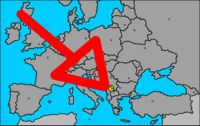

Kosovo
 De: La Frikipedia, la enciclopedia extremadamente seria.
De: La Frikipedia, la enciclopedia extremadamente seria.
| De la serie Países del planeta tierra:
|
gröΦΧΨΩßte kaΔΕΖnn
Kosovo
ЖЗљзЈјКМкжЛлЉмН
|
|
| Lema: No pertenecemos a Nadie
|
Himno: Todavia no lo han hecho
|

|
| Capital
|
Tenia una, pero se la quedaron los Serbios
|
| Mayor ciudad
|
Aun no dispone de ciudades
|
| Lenguas oficiales
|
Turco, Bosnio, Herzegovino, Serbio, Montenegrino, Italiano, Genoves, Griego, Latin, Japones e Hindu
|
| Gobierno
|
Mucha gente hablando en una Habitacion
|
Zarζηρςβψω2
|
Marachwiztocov Mirchvaltocovich
|
| Área
|
Chiquita
|
| Población
|
Poquitos
|
| Moneda
|
Mayormente redonda
|
| Zona horaria
|
No conocen los numeros
|
| Dominio Internet
|
.Serb (Todavia no llega la independizacion digital)
|
| Código telefónico
|
¿No fui claro?, no los conocen!
|
| Dimes y diretes, entre grandes y pequeñetes
|
Kosovo (o cuidao, "Kesobo") es un estado de jebis en proceso de independizacion país de Europa, en realidad algunos dicen que no es un país, sino que se trata de una comunidad marciana, y otros afirman que simplemente son rebeldes.
Origen de la palabra
Afiche publicitario (Traducido al Español) en el que se observa una campaña de adiestramiento para soldados pacifistas kosovares
Muchos historiadores afirman que proviene del Latin; "Koso" (Masculino de la palabra cosa, lo que se entiende como un objeto cualquiera.) y "vo" (que se afirma que proviene del pronombre "vos"). La traduccion de esta palabra seria algo asi como "Cosa Tuya", lo que se da a entender como que Kosovo es tuya, mia y de cualquiera que la reclame
Hechos que dieron origen a Kosovo
- 10000 a.C.: Unos cuantos cavernícolas pasan por las tierras de Kosovo, olvidan alli un par de huesos con los cuales se arma el primer edificio de ese lugar.
- 300 a.C.: Un emperador romano descubre que en la ciudad que habian armado los cavernicolas hay un gran yacimiento de Marihuana y en menos de 10 minutos la conquista.
- 0 a.d.C.: Chuck Norris iba caminando por Kosovo cuando tuvo una ereccion... La ciudad de miles de años quedo destruida.
- 1450 d.C: Se establecen un grupo de elfos en la region de Kosovo y empiezan a construir lo que seria Serbia.
- 1850 d.C. La revolucion industrial sacude toda Europa, Serbia se ve gravemente afectada por una oleada de consoladores mecanicos mutantes que ataca a la nacion dejando miles de muertos.
- 1912 d.C.: El Titanic se hunde cerca de las costas de Kosovo al impactar contra una foca que se paseaba por ese lugar.
- 1939 d.C.: Kosovo recibe una fuerte influencia Jebi por parte de la Alemania Nazi y empieza a pensar en ser rebelde y separase de su país de origen.
- 1945 d.C.: Definitivamente Kosovo es influenciada por Adolf Hitler cuando este decidio masacrar a varios miles de ciudadanos de ese lugar.
- 1946-1963 d.C.: Kosovo es pasado de mano en mano por mas de 3250 paises de toda Europa hasta que finalmente se decide reconocerlo como algo que es semi-independiente.
- 1963-2007 d.C.: Varios miles de conflictos belicos entre Serbia, Rusia, Estados Unidos, Australia, Polonia, Chipre y Taiwan llevan a Kosovo a realizar una Revolucion pacifista, liderados por Ghandi atacan al ejercito serbio con escobas y palitos de helado.
- 2007 d.C.: La revolucion fracasa, miles de Kosovares muertos y varios millones heridos.
- 2008 d.C.: Debido
A que los Kosovares daban lastima al gran presupuesto que tuvo que invertir Serbia en cementerios y salud publica deciden darle la independecia a Kosovo por 389 años, 2 meses, 34 dias, 3 horas, 72 minutos y 3846 segundos.
Hermoso bosque situado al este de Kosovo
Recursos Naturales
Aunque sea un país de proporciones asquerosamente pequeñas dispone de una gran cantidad de recursos que la TiaMadre Naturaleza le ha brindado:
- Rios: Kosovo es atravesada por 3865 rios con un caudal promedio de 3cm³/
primerosegundo los cuales dan a Kosovo una gran diversidad de peces entre los que se encuentran los Atúnes, los Delfines y los Penedectors entre otras especies comestibles. Las especies no comestibles como la alga asesina, los negros cabeza y canis son utilizadas por los nativos del lugar para fabricar recuerdos que luego venden a los turistas.
- Bosques:En peligro de extincion (Como en todo el mundo) los bosques fueron, son y no se sabe si seran una gran fuente de ingresos, ya que con la madera que sacan de los bosques crean productos como lapices, tractores y consoladores; Otro uso de la madera es el de construir cabañas y usarlas para centrales electricas.
- Praderas y valles: Kosovo dispone de varios km² de sitios llanos y altamente fertiles debido al gran vacio que dejan los bosques despues de su destruccion. Los espacios que quedan, generalmente se utilizan para producir soja, Marihuana y Plantas Rodadoras aunque no se descarta la idea de crear una nueva nacion dentro de esos espacios.
Asi es en el mapa
Kosovo es una pequeña porcion de mierdatierra situada en algun lugar perdido de Europa, su extension es atravesada por varios miles de rios de sangreagua salada.<
Tiene una interesante porcion de su territorio cubierta de bosques (Que como maximo producen tres lapices por año) y una region montañosa totalmente inutil.
Su ubicacion espacial es el el grado 179,7-2 sobre el meridiano de Sandwich y se encuentra al norte de Espiña y es paralelamente oblicua al angulo transversal del lado septentrional del sur de Portugal.
Aqui se ve a una multitud de Kosovares alabando a su
Dios ortodoxo
Religion
La religion principal y vigente en este momento en todo el territorio de Kosovo es la del Pastafarismo ortodoxo o Pastafarismo Serbio de Kosovo.
Principales diferencias entre el Pastafarismo y el Pastafarismo Ortodoxo:
- Los ortodoxos afirman que Dios es un ser creado de Ravioles con salsa tailandesa.
- Segun la creencia el mundo no fue creado por Dios, sino que en realidad lo creo Estados Unidos para tener con quien pelear.
- Muchos afirman que su Dios en realidad fue el invento de una fabrica de pastas para vender sus productos.
He aqui el porcentaje de las distintas religiones dentro de Kosovo
- 42,3% Pastafaris ortodoxos
- 1,2% Musulmanes
- 1% Fanaticos de Cyberjesus
- 3% Islamicos
- 4,23293823% Evangelicos
- 666%
satanicosCristianos
- 74,2% Ateos
Sociedad y grupos etnicos
Debido a la gran cantidad de desastres militares guerras sufridas, la poblacion de Kosovo es muy pequeña, como mayoria se encuentran los serbios y los rusos aunque en el país habitan algunos kosovares.
El país se ve constantemente invadido por soldados inmigrantes que dejan al país en la ruina, a estos inmigrantes se oponen rotundamente los revolucionarios que son los que levantan al país luego de la crisis.
La poblacion del Pais esta compuesta por:
- 35% Serbios
- 49,993% Rusos
- 2 o 3 japoneses
- 148,7% inmigrantes indocumentados
- 3 a 4% canis y reguetoneros
- 1,00004% kosovares
Autor(es):
- Frikiman
- Naqudr
- Cibercrank
- Veni Vidi Vici
- Macro black
- Gal2
- Generibot
- AztroCat01
Frikipedia 2005-2016, Licencia
GFDL 1.2 - Extraído por FrikiLeaks

 Imperios de Europa
Imperios de Europa